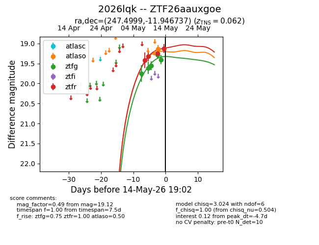
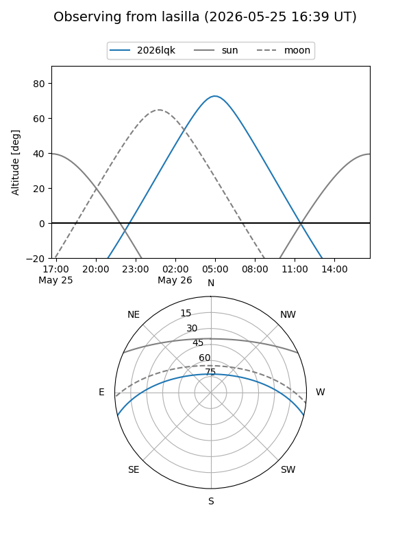
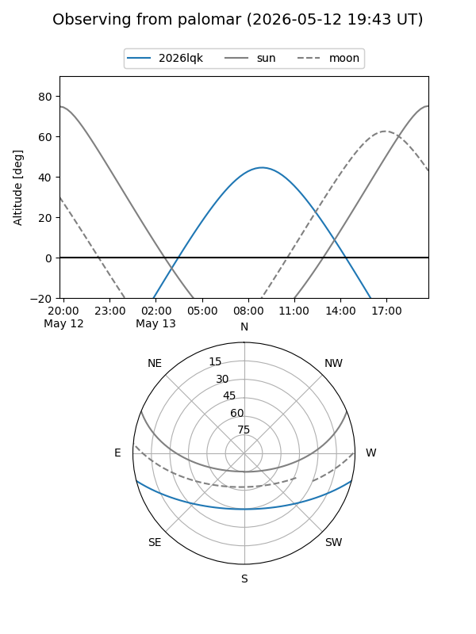
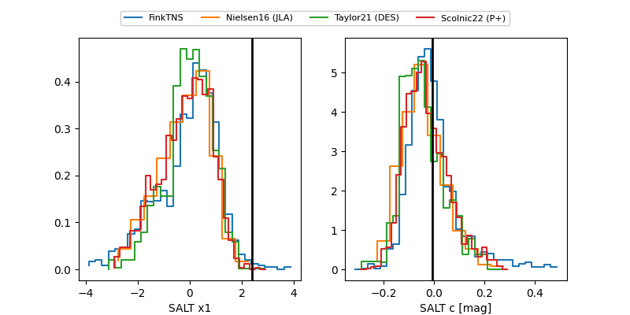

2026lqk
Target 2026lqk at 2026-05-14 19:04
Aliases and brokers:
FINK: link
Lasair: link
ALeRCE: link
TNS: link
YSE: link
alt names
ZTF26aauxgoe (ztf,fink_ztf)
2026lqk (tns,yse)
Coordinates:
equatorial (ra, dec) = 247.4999,-11.94674
equatorial (HMS+DMS) = 16:29:59.99,-11:56:48.25
galactic (l, b) = (3.9250,+24.17315)
Flags:
confirmed ia
Photometry:
last atlaso=19.13, ztfg=19.40, ztfr=19.12
1 atlaso, 5 ztfg, 4 ztfr detections
Lightcurve

Visibility


Additional plots
